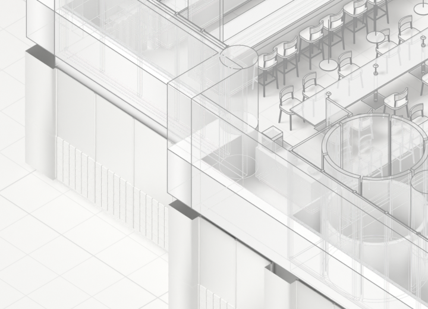
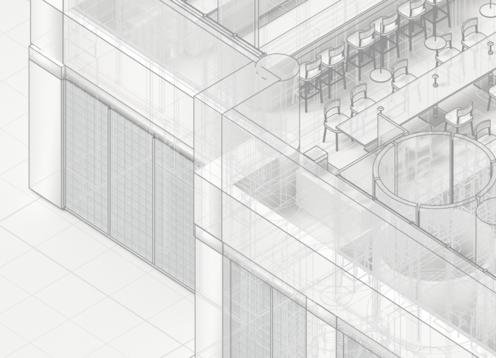
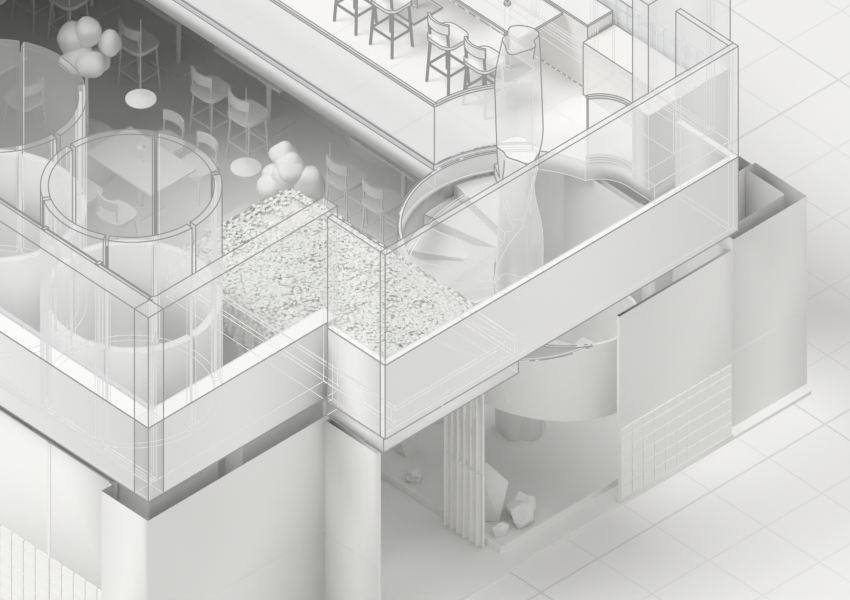
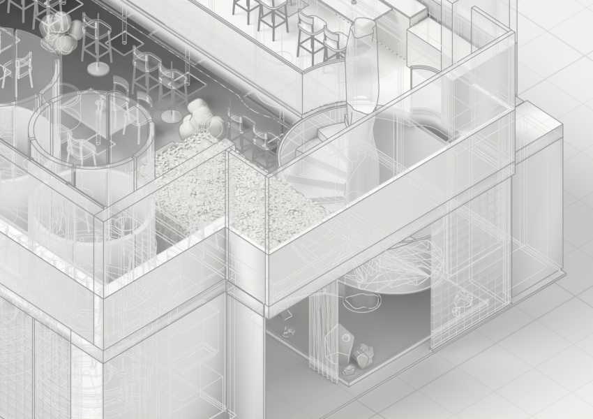
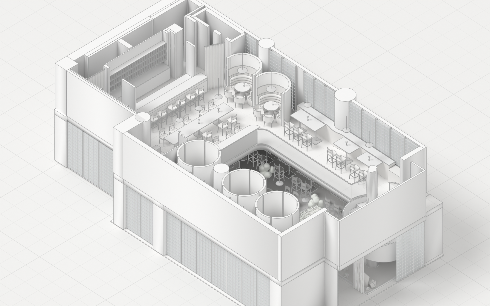
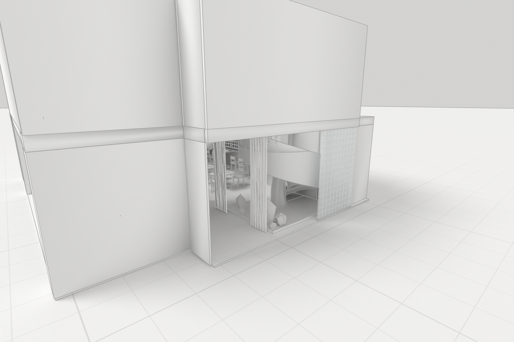
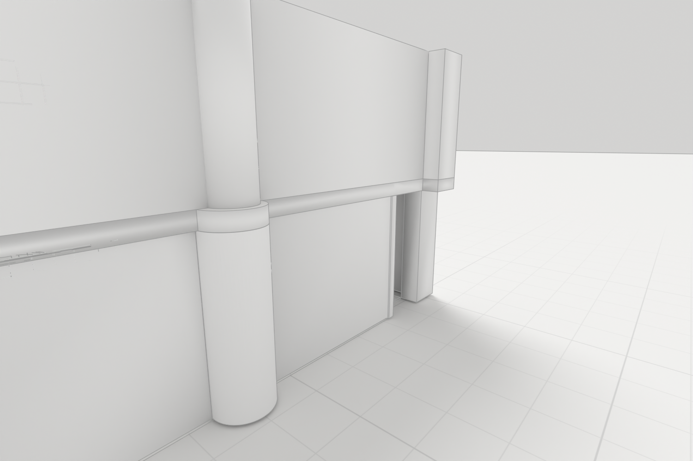

Restaurant · le bâtiment entier : les deux étages raccordés
25/11/2026 · la dalle sous les murs, le rez-de-chaussée sous le 1er, la carte à deux étages
Le rez-de-chaussée et le 1er étage forment maintenant un seul bâtiment : la façade du bas
monte jusqu'à la bande de la dalle, et le 1er pose dessus. Sur la carte, le bouton « 1er » montre l'étage sur le
rez-de-chaussée.

Avant : la fente sous les murs du 1er

Après : la bande de la dalle
Pourquoi ils ne se touchaient pas
- Deux modèles à part. Chaque étage avait son propre script. Dans les vues du 1er, le rez-de-chaussée n'était qu'un fond pâle, sans traits, coupé sous la dalle : il se lisait comme un autre objet.
- Une fente tout autour. La dalle du 1er s'arrêtait à la face intérieure de ses murs extérieurs. Sous ces murs, il restait 30 cm de vide entre le haut du rez-de-chaussée et le bas du 1er : c'est la bande sombre que tu as entourée.
- Une façade ouverte. Sur le plan du 1er, la gaine d'ascenseur et la bande extérieure de la façade droite sont dessinées en gris foncé, pas en noir. La vectorisation les avait manquées : la façade est du 1er restait ouverte sur 3 m.
- Un toit manquant. Le petit local du rez-de-chaussée, au-delà de la façade droite, n'avait rien au-dessus.

Avant : l'angle de l'entrée

Après
Ce qui les raccorde
- La dalle passe sous les murs extérieurs des deux niveaux, jusqu'aux faces du bâtiment. Une bande de 30 cm fait le tour, entre les murs du bas et ceux du haut, comme sur la coupe du lieu.
- Le rez-de-chaussée est le modèle entier, avec son mobilier, posé sous la dalle. Il a les mêmes matières et les mêmes traits que le 1er. Son escalier s'arrête à 1 m sous le plancher du haut, là où celui du 1er prend la suite.
- Les poteaux du bas montent aux mêmes places. Celui du vide est un seul fût, du sol du bas au plafond du haut.
- La gaine d'ascenseur et la bande est sont modélisées sur les mesures du plan, au-dessus des murs du bas : la façade droite se lit sur les deux niveaux.
- Le local du bas est couvert par la dalle.
- Rien ne se croise. Il ne reste que des contacts voulus : les pieds sur la dalle, les murs qui se rejoignent. L'ouverture de l'escalier est élargie de 2 cm pour laisser passer sa main courante.
Le bâtiment entier, sans coupe

Les deux étages à pleine hauteur, depuis l'angle de la carte

La façade gauche : les pavés de verre du bas, la bande de la dalle, le mur du 1er

L'angle de l'entrée, sous l'îlot de lierre

La façade droite : les poteaux et la bande est sur les deux niveaux